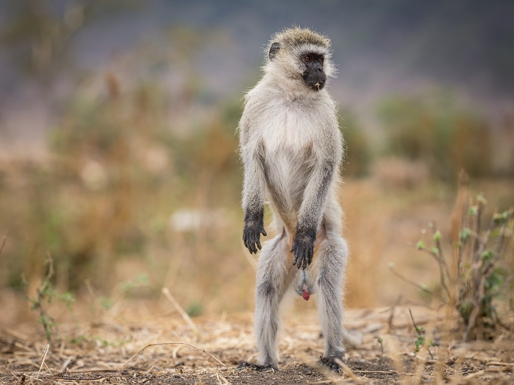
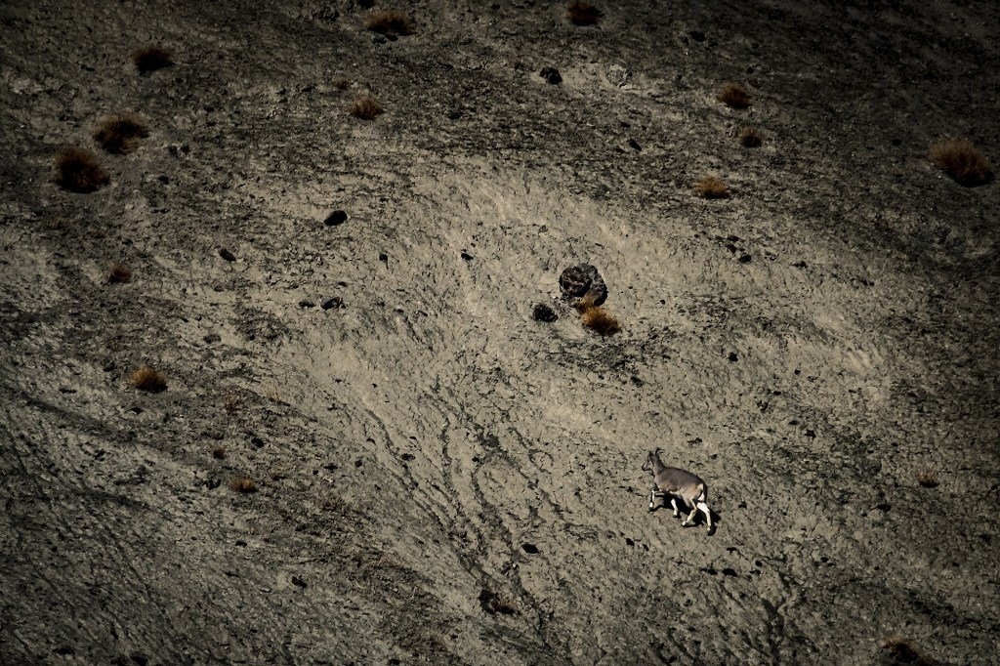
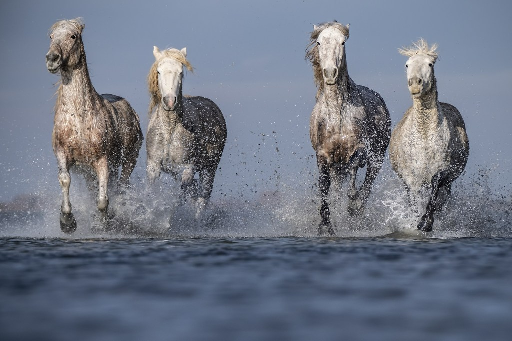
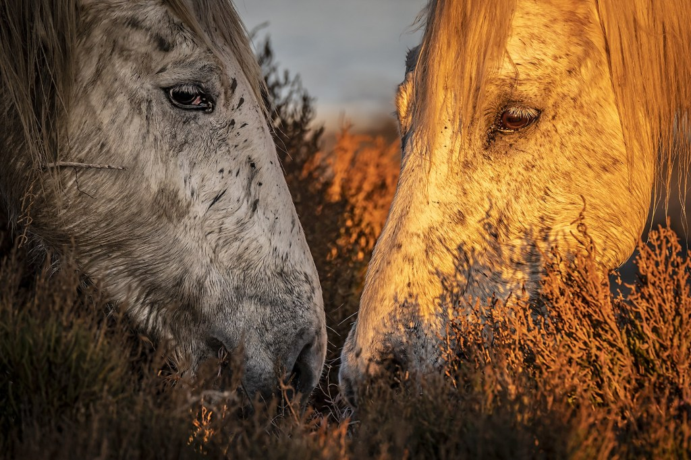
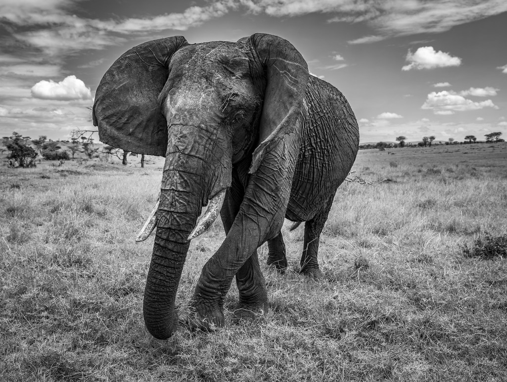

About
At Fujifilm we create innovative products and deliver effective solutions in a wide variety of fields to serve society, contribute to the quality of life, and enhance environmental sustainability.


One of the most rewarding parts of my job is making an emotional connection with the wildlife I encounter. One of the most challenging aspects of my job is conveying that connection in a photograph. To do that, I have to make use of a very important compositional tool – perspective.
For me, the starting point for photographing wildlife is choosing my viewpoint – where I stand or, more commonly, where I sit or lie. I position the camera to compose all the visual elements – the main subject, and foreground and background detail – in a particular way to reveal the story I want to tell.

If my story is focused on the animal or an aspect of its behaviour, I stand closer to give it visual weight. However, if my story is an environmental study of the animal in its habitat, I might stand further back to create a more balanced weighting.
Often, I also find I’m shifting slightly to one side or another, changing the negative space (the area around the main subject) in order to eliminate a distracting object or highlight, or to create separation between overlapping objects.
One of the most important decisions I make is deciding on my eye level. Eye level influences the viewer in two ways. In relation to the horizon (implied or explicit) it determines the journey the viewer takes through the picture space. If I position the horizon low down, the eyes are forced to look upwards (foreground-to-background). I would do this, for example, when photographing animals in their environment where there’s a spectacular sky. If the sky is bland or I want to obscure background clutter, I shoot from a higher viewpoint, forcing the viewer to gaze from top to bottom.
As well as determining the visual journey, eye-level also affects us psychologically because of a psycho-analytical theory known as the adult/child relationship. Adults gaze down at children and, in the adult/child relationship, are the dominant party. Children, being smaller, look up at adults making them the subservient participant. In an adult-to-adult or child-to-child relationship, where both parties are at the same eye level, neither is dominant nor submissive – the relationship is one of equality.

This psychology spills over into the relationship formed between the viewer and the principal subject in a photograph. With a low eye level, where the subject is looking down at the viewer, the subject is imbued with a sense of power, influence, authority or superiority, which creates an imposing, slightly daunting composition. The opposite applies when eye-level switches from low to high. With this composition, it’s the viewer who takes on the dominant role and the animal becomes more passive and meek. This is the reason I very rarely photograph wildlife from a high eye level.
My favourite eye level is eye-to-eye. In this composition, the relationship between subject and viewer is equal. For wildlife, this is the most engaging angle because it helps to recreate the connection I make with my subjects, which is then passed on to the viewer.

Once I know my viewpoint, my attention switches to lenses. I should say upfront, although I’m a wildlife photographer, I’m a massive fan of short lenses. In fact, my favourite lens for wildlife photography is the equivalent of a 50mm standard lens and you’ll often find me with my XF35mmF1.4 prime lens attached to my FUJIFILM X-T2 or X-H1 bodies, or a GF63mmF2.8 prime on a GFX 50S.
The reason I like the “standard” lens is because it most closely replicates our own angle of view. In other words, the camera sees what we see and, because one of my main aims is to visually generate the human/animal connection, by getting close to revealing the situation as you would experience it with your own eyesight; I get closer to putting you in the moment, rather than making you a passive observer of it.
Of course, many times it’s impossible to get close enough to use such a short lens and so the lens I use most often on my main bodies (X-T2 and X-H1) is the XF50-140mmF2.8 short/medium telephoto zoom. As well as getting me visually closer, the telephoto aspect of this lens enables me to isolate the subject from the background, creating greater emphasis on the animal. Only when I need a much longer reach, if the animal is very distant, will I switch to the XF100-400mmF4.5-5.6 long telephoto.
In life, perspective is how we see the world. In photography, perspective is how we present the world we see. In this sense, our point-of-view, the camera’s point-of-view and the lenses we choose are all intrinsically linked.

Website: https://chrisweston.photography/
Twitter: https://twitter.com/cmwphoto
At Fujifilm we create innovative products and deliver effective solutions in a wide variety of fields to serve society, contribute to the quality of life, and enhance environmental sustainability.